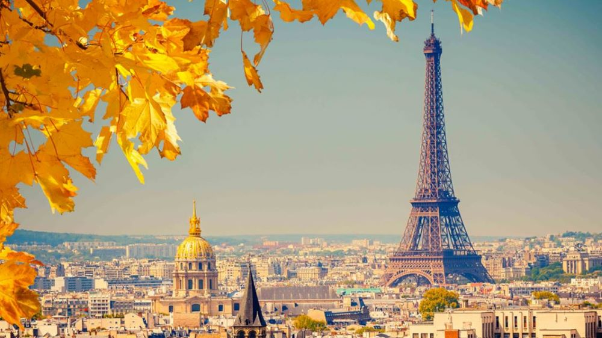
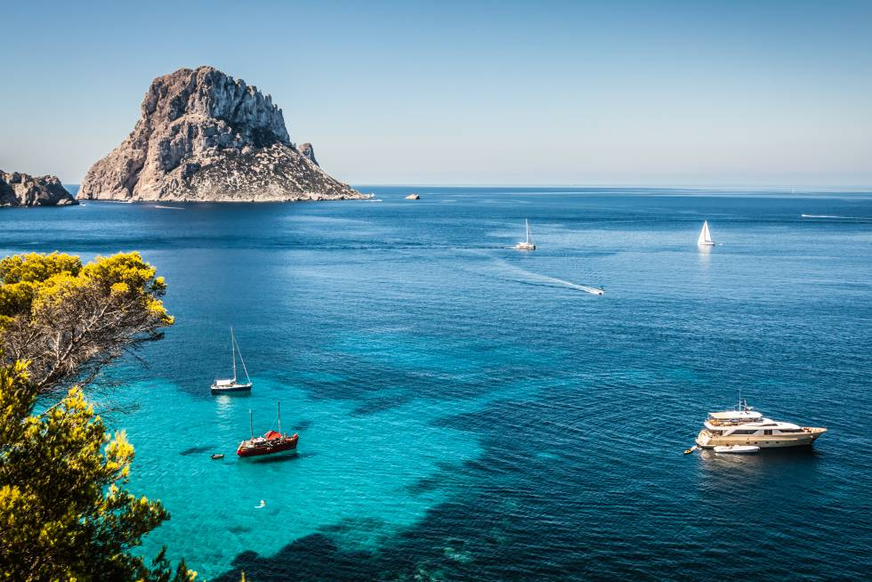
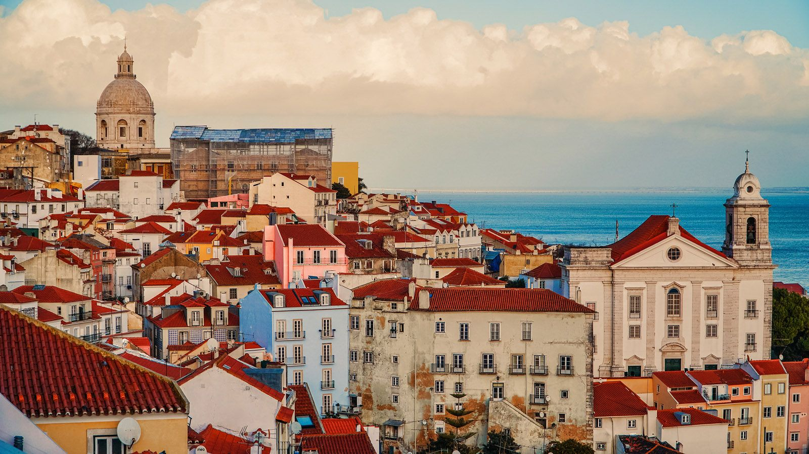
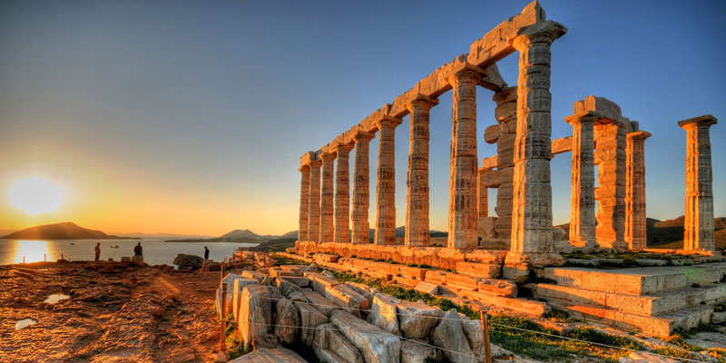
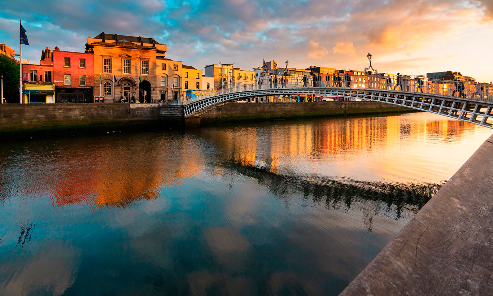
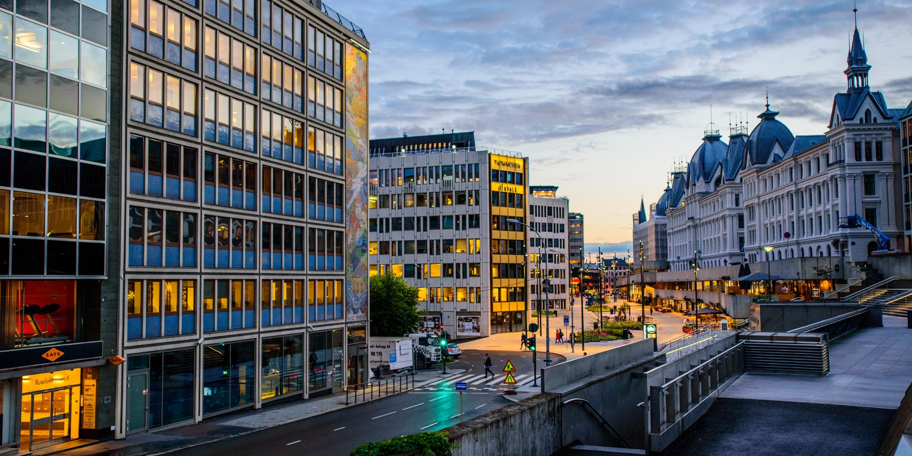

Destinos
-

Berlin
La ciudad es conocida por su ambiente artístico y los sitios geográficos modernos, como la Filarmónica de Berlín, el Monumento del Holocausto y los restos del Muro de Berlín.
Desde 55€
-

Londres
En su centro se alzan el imponente Palacio del Parlamento, la torre del icónico reloj "Big Ben" y la Abadía de Westminster, lugar de las coronaciones monárquicas británicas.
Desde 45€
-

Paris
Su paisaje urbano del siglo XIX está entrecruzado por amplios bulevares y el río Sena. Destacan la Torre Eiffel y la catedral gótica de Notre Dame del siglo XII.
Desde 65€
-

Tokyo
Mezcla lo ultramoderno y lo tradicional, desde los rascacielos iluminados con neones hasta los templos históricos. Destacan el santuario Shinto Meiji y el Palacio Imperial.
Desde 450€
-

Ibiza
Es conocida por su animada vida nocturna; muchas discotecas europeas tienen sucursales aquí. Destacan al sur del centro, sus playas Ses Figueretes y Platja d'en Bossa.
Desde 45€
-

New York
En su centro se encuentra Manhattan, un distrito densamente poblado que se encuentra entre los principales centros comerciales, financieros y culturales del mundo.
Desde 350€
-

Cracovia
Conocida por su centro medieval bien conservado y su barrio judío. Su ciudad antigua, rodeada por el parque Planty y los restos de las murallas medievales de la ciudad.
Desde 50€
-

Lisboa
Desde el imponente castillo de San Jorge, la vista abarca los edificios de colores pastel en la ciudad antigua, el estuario del Tajo y el puente colgante 25 de Abril.
Desde 45€
-

Madrid
Es famosa por sus ricas colecciones de arte europeo, con obras de Goya, Velázquez y otros maestros españoles en el Museo del Prado. Destacan la Plaza Mayor o el Palacio Real.
Desde 45€
-

Barcelona
Es conocida por su arte y arquitectura. La fantástica iglesia de la Sagrada Familia y otros hitos modernistas diseñados por Antoni Gaudí adornan la ciudad.
Desde 45€
-

Roma
Es una extensa ciudad cosmopolita que tiene a la vista casi 3,000 años de arte, arquitectura y cultura de influencia mundial. Destacan Las ruinas antiguas como las del Foro y el Coliseo Romano.
Desde 55€
-

Napoles
Es una ciudad del sur de Italia que se ubica en el golfo de Nápoles. Data del segundo milenio a. C. y tiene siglos de arte y arquitectura importantes como la catedral Duomo di San Gennaro.
Desde 55€
-

Atenas
Capital de Grecia, en la ciudad aún predominan los sitios geográficos del siglo V a. C., incluida la Acrópolis, una ciudadela sobre un monte con antiguos edificios, como el templo del Partenón.
Desde 105€
-

Dublín
Se encuentra en la costa este de Irlanda en la desembocadura del río Liffey. Sus edificios históricos incluyen el Castillo de Dublín, que data del siglo XIII, y la Catedral de San Patricio.
Desde 55€
-

Oslo
Famosa por sus áreas verdes y museos. Muchos de estos se encuentran en la Península de Bygdøy, incluido el Museo Marítimo Noruego y el Museo de barcos vikingos de Oslo.
Desde 125€